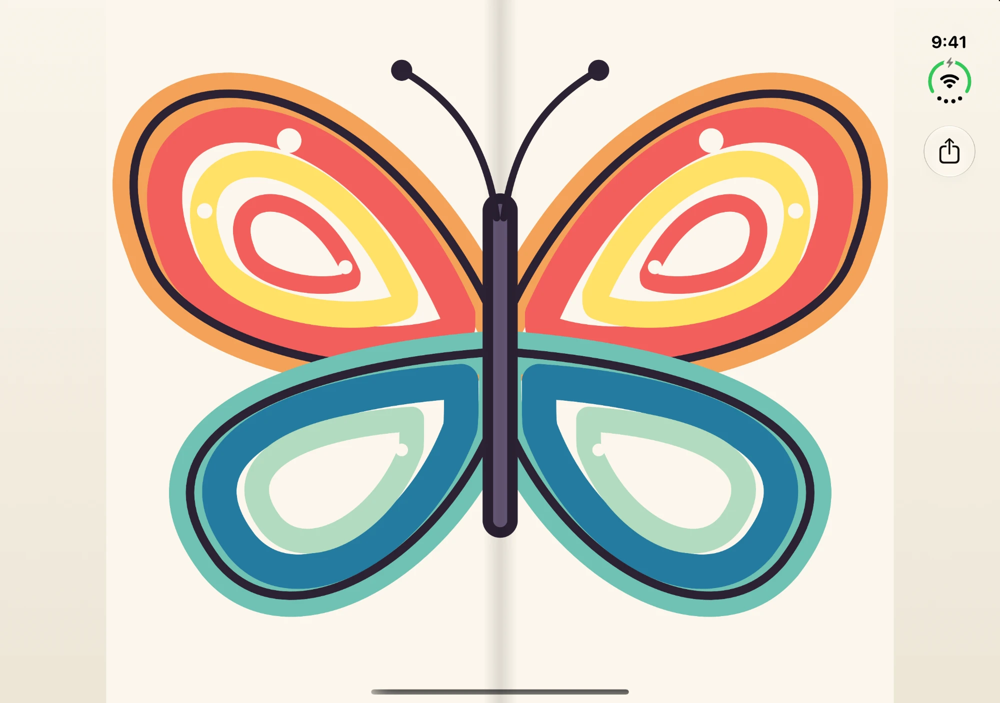
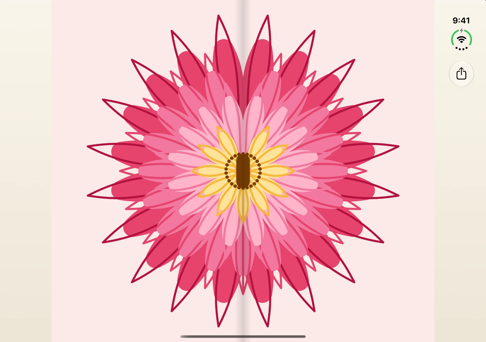
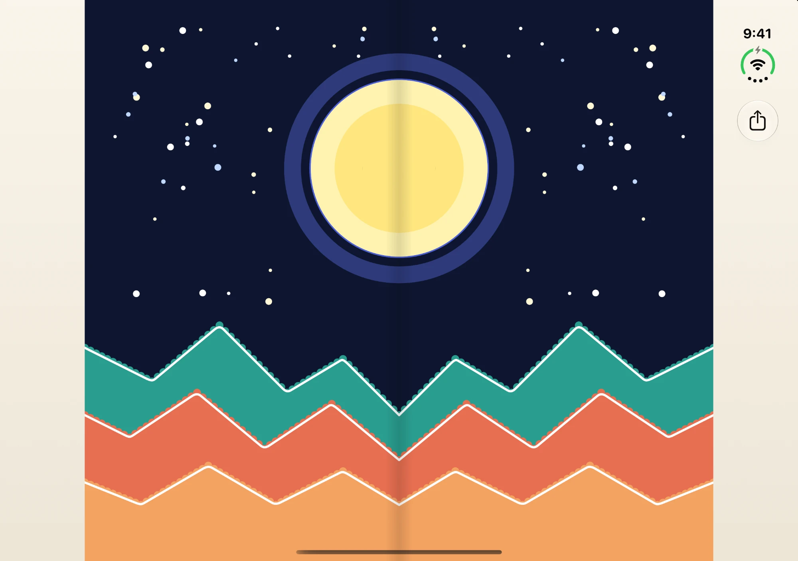
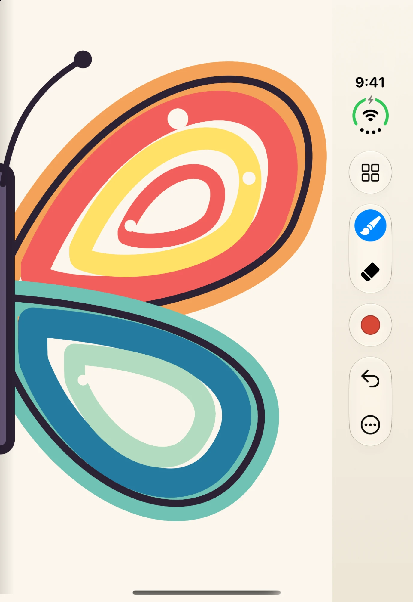
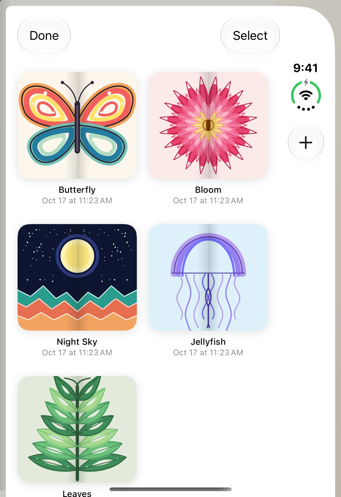
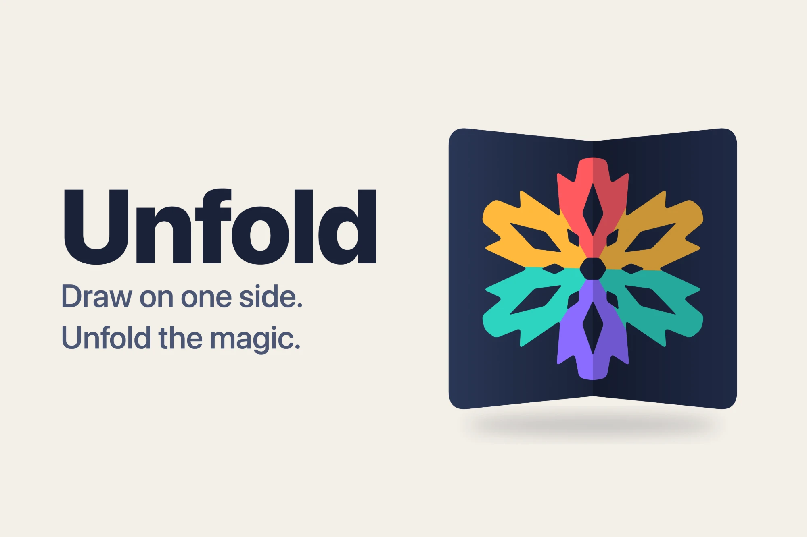

A focused outer canvas
Draw one half of the image with nothing in the way.
A drawing app
Draw on one side.
Unfold the magic.
On the outer display, you draw one half of an image. When you unfold your phone, the complete symmetrical drawing appears across the inner display. Every doodle becomes a butterfly, a bloom, a snowflake.
The outer display is a focused canvas for drawing one half of the image.
Open your phone and the full mirrored artwork appears across the inner display.
Flip between your drawings on the inner display like pages in a book.
Butterflies, blooms, night skies, jellyfish and leaves, all drawn as just one half.




Rather than stretching a conventional drawing app across a larger screen, each display has its own purpose. The outer display stays a focused canvas, and the inner display shows the full mirrored artwork.
Draw one half of the image with nothing in the way.
Unfold to see the complete symmetrical artwork, then swipe through your drawings like pages in a book.
Adjustable brush and eraser sizes, plus full color selection.
Document management keeps every piece saved and one tap away.
Private by design: no account, no ads, no tracking. Your drawings stay on your device.

